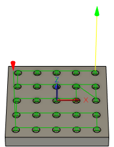

<div id="probe_order_bidirectional"><p><b>[X 順]</b>または<b>[Y 順]</b>が選択されている場合に、一方向ではなく双方向に穴またはボスをプローブします。例:</p>

<table class="tipTable" cellspacing="10">
<tr>
<td><center></center></td>
<td><center></center></td>
</tr><tr>
<td><center><p><b>X 順</b></p></center></td>
<td><center><p><b>X 順(双方向)</b></p></center></td>
</tr></table>
</div>